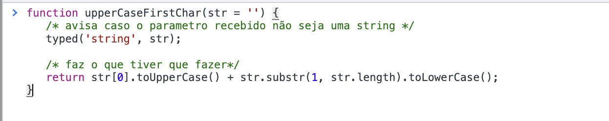

Como fazer 'Dynamic Type Checking de Tipos Primitivos' (checar tipos em runtime) em JavaScript puro
← ← ← 8/2/2022, 11:15:48 AM | Posted by: Felippe Regazio
As vezes vc vai escrever uma lib pequena, algo simples e quer usar uma forma funcional e dinamica, mas sem precisar de trocentas dependencias, nem iniciar nenhum tipo de estrutura. Vc só quer escrever seu JS, mas ao mesmo tempo checar alguns tipos e amarrar umas regras:
Se esse é seu caso, eu vou mostrar algumas tecnicas de checagem de tipos primitivos em runtime (tipos sao verificados enquanto o programa ta rodando). Claro que essa tecnica não alcança a abrangencia de um TS, são cenarios diferentes, se alguem comparar não vou nem responder.
O que vamos fazer será apenas um type hint primitivo: ou seja, vamos verificar os tipos dos valores, e caso algum esteja errado vamos avisar o erro mas permitir que o programa continue. Se vc quiser parar o programa basta dar um throw no lugar de console.warn.
Essa é a função que fará isso pra nós:
function typed(t, ...args) {
args.forEach(value => {
const typeMatch = t === 'array' ? Array.isArray(value) : typeof value === t;
if (!typeMatch) {
/**
* Você pode fazer o que quiser aqui. Se quiser parar a runtime,
* vc pode lançar um erro (throw new Error()). No nosso caso apenas
* vamos avisar que tipos estão diferindo mas deixar o programa
* continuar. Usamos console.warn + new Error inves de console trace
* porque esse ultimo vem em formato de mensagem simples.
*/
console.warn(new Error(`Type mismatch for value: ${value}. Expected it to be: "${t}"`));
}
});
}
É um exemplo o mais simples possível para que você possa adequar aos seu uso: adicionar for-of ao invés do forEach para micro otimização de performance, ou fazer um type-map ao invés de checar apenas primitivos... enfim, você manda. Continuando...
O uso da nossa função é simples: Vc passa o primeiro argumento como sendo o tipo esperado para todos os outros valores que quer verificar. Depois do primeiro argumento vc pode passar quantos valores quiser para checagem. Exemplo:
Os valores possiveis para verificar os tipos são todos os tipos reconhecidos pelo verificador "typeof" e um tipo especial "array" criado por nós, sendo assim:
typed(\, ...args);
onde t pode ser: undefined, null, boolean, number, bigint, string, symbol, function, array.
Mas como isso é util? Simplesmente pra dar type hint de qualquer variavel, valor ou argumento no seu código. Exemplo:

Para os casos acima, se ao inves de hint (console.warn) estivessemos dando um throw, o software sequer continuaria rodando com os tipos diferindo. É isso. Outro dia se pintar a vontade eu posto um sobre como fazer isso com tipos customizáveis ou estruturais.